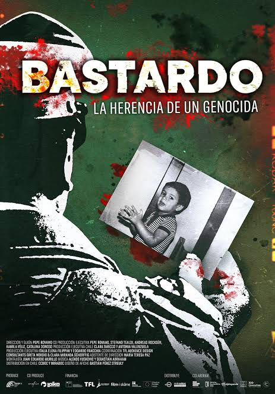
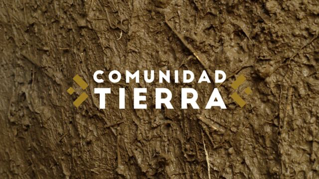
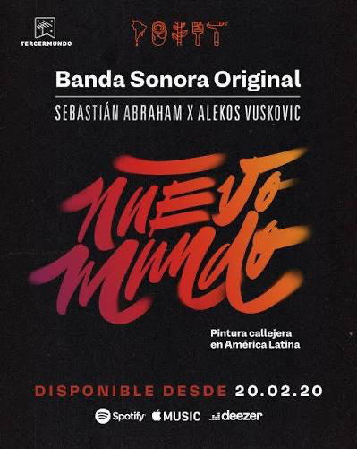
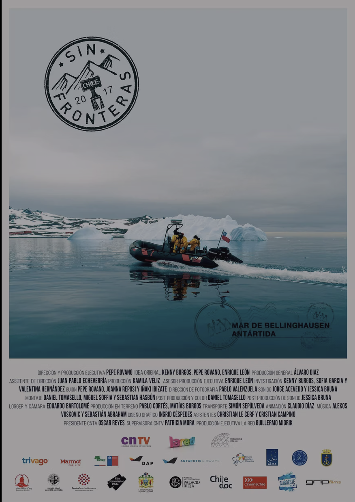
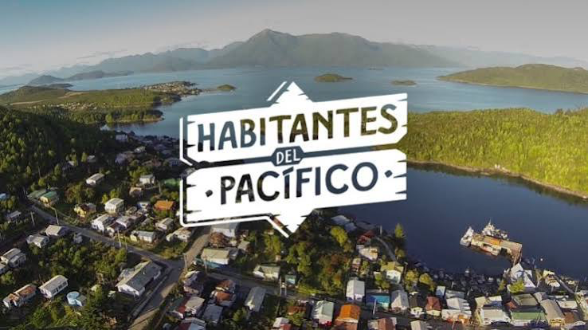
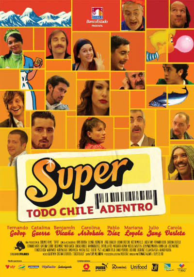

Audiovisual
Creo música original para películas, series y documentales. Junto a Alekos Vuskovic, compongo y produzco música para distintos proyectos. Grabamos instrumentos y exploramos sonidos, trabajando en conjunto con las productoras y los equipos creativos para que la música acompañe las imágenes y aporte emoción, atmósfera y carácter a cada proyecto.

Bastardo

Comunidad Tierra

Nuevo Mundo

Sin Fronteras

Habitantes del Pacífico

Super